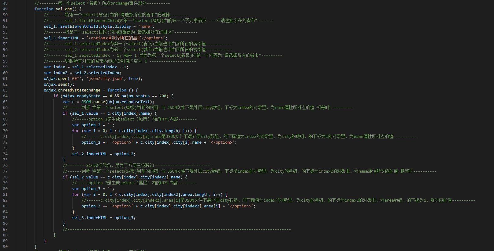
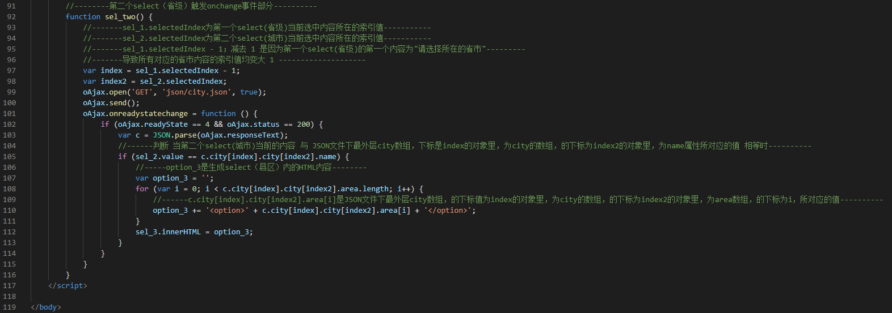

1 <body onload="change()">
2 <form>
3 <select onchange="sel_one()">
4 </select>
5 <select onchange="sel_two()">
6 <option>请选择所在的城市</option>
7 </select>
8 <select>
9 <option>请选择所在的县区</option>
10 </select>
11 </form>
12 <script>
13 //--------获取所有的select列表，并赋值给变量-----------
14 var select = document.getElementsByTagName('select');
15 var sel_1 = select[0];
16 var sel_2 = select[1];
17 var sel_3 = select[2];
18 //--------新声明一个Ajax对象-----------
19 var oAjax = new XMLHttpRequest();
20 //--------第一个select（省级）内容-------
21 function change() {
22 oAjax.open('GET', 'json/city.json', true);
23 oAjax.send();
24 oAjax.onreadystatechange = function () {
25 if (oAjax.readyState == 4 && oAjax.status == 200) {
26 var c = JSON.parse(oAjax.responseText);
27 //-----option_1是生成select（省级）内的HTML内容--------
28 var option_1 = '<option>请选择所在的省市</option>';
29 //-----c.city.length是JSON文件下最外层city数组的长度，及它内所有{}对象的个数---------
30 for (var i = 0; i < c.city.length; i++) {
31 //-----c.city[i].name是JSON文件下最外层city数组，的下标值为i的对象里，为name属性所对应的值----------
32 option_1 += '<option>' + c.city[i].name + '</option>';
33 }
34 sel_1.innerHTML = option_1;
35 }
36 }
37 }
38 //--------第一个select（省级）触发onchange事件部分----------
39 function sel_one() {
40 //-------将第一个select(省级)内的"请选择所在的省市"隐藏掉--------
41 //-------sel_1.firstElementChild为第一个select(省级)内的第一个子元素节点---->"请选择所在的省市"-------
42 sel_1.firstElementChild.style.display = 'none';
43 //-------将第三个select(县区)的内容重置为"请选择所在的县区"----------
44 sel_3.innerHTML = '<option>请选择所在的县区</option>';
45 //-------sel_1.selectedIndex为第一个select(省级)当前选中内容所在的索引值-----------
46 //-------sel_2.selectedIndex为第二个select(城市)当前选中内容所在的索引值-----------
47 //-------sel_1.selectedIndex - 1；减去 1 是因为第一个select(省级)的第一个内容为"请选择所在的省市"---------
48 //-------导致所有对应的省市内容的索引值均变大 1 --------------------
49 var index = sel_1.selectedIndex - 1;
50 var index2 = sel_2.selectedIndex;
51 oAjax.open('GET', 'json/city.json', true);
52 oAjax.send();
53 oAjax.onreadystatechange = function () {
54 if (oAjax.readyState == 4 && oAjax.status == 200) {
55 var c = JSON.parse(oAjax.responseText);
56 //------判断 当第一个select(省级)当前的内容 与 JSON文件下最外层city数组，下标为index的对象里，为name属性所对应的值 相等时----------
57 if (sel_1.value == c.city[index].name) {
58 //-----option_2是生成select（城市）内的HTML内容--------
59 var option_2 = '';
60 for (var i = 0; i < c.city[index].city.length; i++) {
61 //------c.city[index].city[i].name是JSON文件下最外层city数组，的下标值为index的对象里，为city的数组，的下标为i的对象里，为name属性所对应的值----------
62 option_2 += '<option>' + c.city[index].city[i].name + '</option>';
63 }
64 sel_2.innerHTML = option_2;
65 }
66 //--------81~92行代码，是为了方便三级联动-------------------------
67 //------判断 当第二个select(城市)当前的内容 与 JSON文件下最外层city数组，下标是index的对象里，为city的数组，的下标为index2的对象里，为name属性所对应的值 相等时----------
68 if (sel_2.value == c.city[index].city[index2].name) {
69 //-----option_3是生成select（县区）内的HTML内容--------
70 var option_3 = '';
71 for (var i = 0; i < c.city[index].city[index2].area.length; i++) {
72 //------c.city[index].city[index2].area[i]是JSON文件下最外层city数组，的下标值为index的对象里，为city的数组，的下标为index2的对象里，为area数组，的下标为i，所对应的值----------
73 option_3 += '<option>' + c.city[index].city[index2].area[i] + '</option>';
74 }
75 sel_3.innerHTML = option_3;
76 }
77 //-----------------------------------------------------------------------------------------------
78 }
79 }
80 }
81 //--------第二个select（省级）触发onchange事件部分----------
82 function sel_two() {
83 //-------sel_1.selectedIndex为第一个select(省级)当前选中内容所在的索引值-----------
84 //-------sel_2.selectedIndex为第二个select(城市)当前选中内容所在的索引值-----------
85 //-------sel_1.selectedIndex - 1；减去 1 是因为第一个select(省级)的第一个内容为"请选择所在的省市"---------
86 //-------导致所有对应的省市内容的索引值均变大 1 --------------------
87 var index = sel_1.selectedIndex - 1;
88 var index2 = sel_2.selectedIndex;
89 oAjax.open('GET', 'json/city.json', true);
90 oAjax.send();
91 oAjax.onreadystatechange = function () {
92 if (oAjax.readyState == 4 && oAjax.status == 200) {
93 var c = JSON.parse(oAjax.responseText);
94 //------判断 当第二个select(城市)当前的内容 与 JSON文件下最外层city数组，下标是index的对象里，为city的数组，的下标为index2的对象里，为name属性所对应的值 相等时----------
95 if (sel_2.value == c.city[index].city[index2].name) {
96 //-----option_3是生成select（县区）内的HTML内容--------
97 var option_3 = '';
98 for (var i = 0; i < c.city[index].city[index2].area.length; i++) {
99 //------c.city[index].city[index2].area[i]是JSON文件下最外层city数组，的下标值为index的对象里，为city的数组，的下标为index2的对象里，为area数组，的下标为i，所对应的值----------
100 option_3 += '<option>' + c.city[index].city[index2].area[i] + '</option>';
101 }
102 sel_3.innerHTML = option_3;
103 }
104 }
105 }
106 }
107 </script>
108
109 </body>